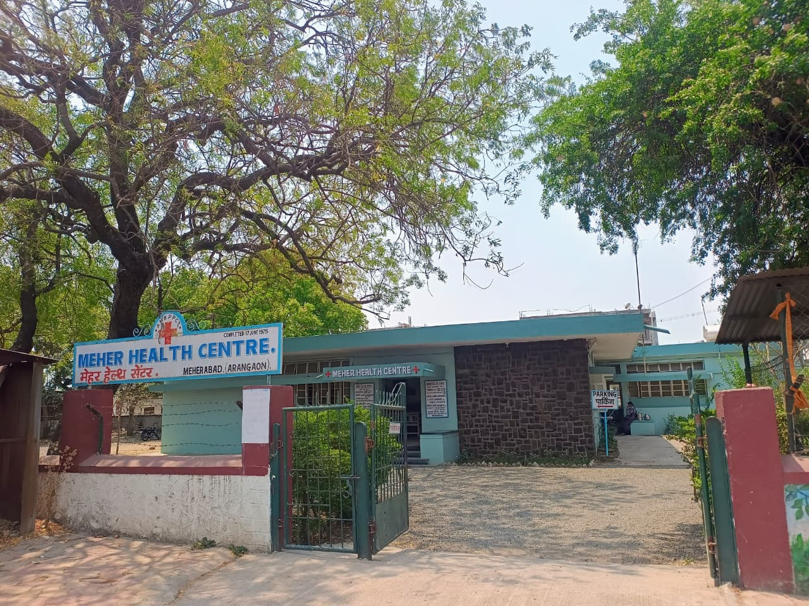
Meher Health Centre, Meherabad (Arangaon) — completed 17 June 1975 Village water supply tank — clean drinking water for Arangaon
Village water supply tank — clean drinking water for Arangaon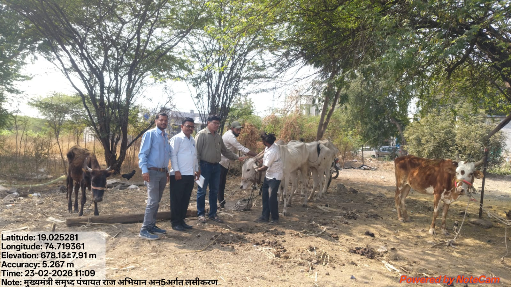
Cattle vaccination drive — Mukhyamantri Samrudh Panchayat Raj Abhiyan Vanrai Bandhara No. 2 — water conservation, Arangaon
Vanrai Bandhara No. 2 — water conservation, Arangaon Gramsansad Bhavan, Arangaon (Meherabad)
Gramsansad Bhavan, Arangaon (Meherabad)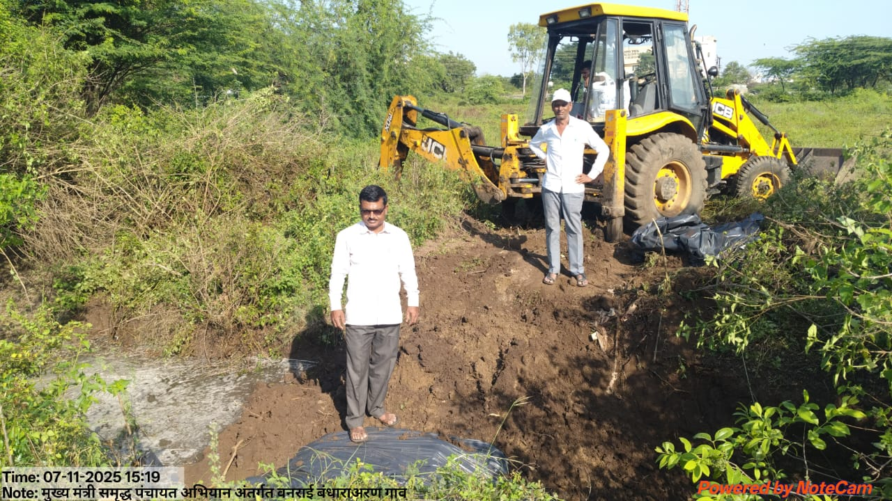
Vanrai Bandhara construction with JCB — Mukhyamantri Samrudh Panchayat Raj Abhiyan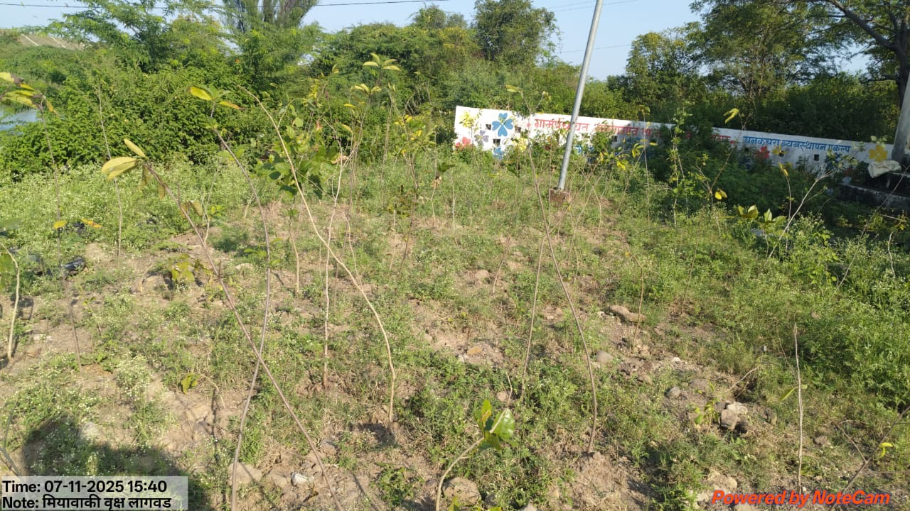
Miyawaki tree plantation — green cover initiative, Arangaon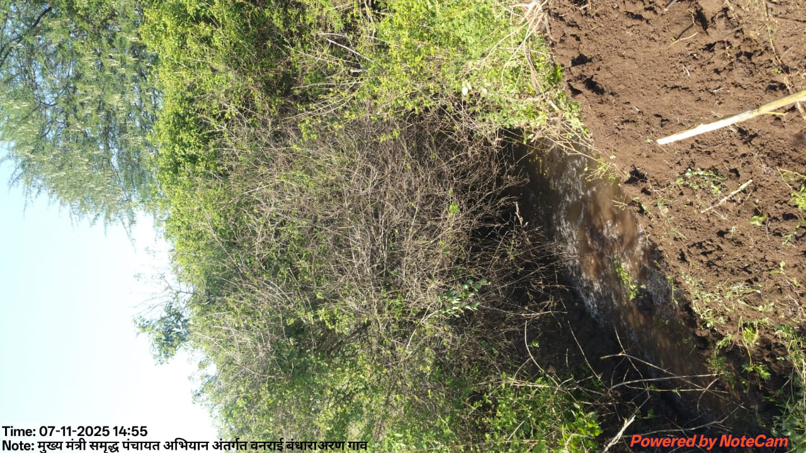
Vanrai Bandhara stream site — water conservation work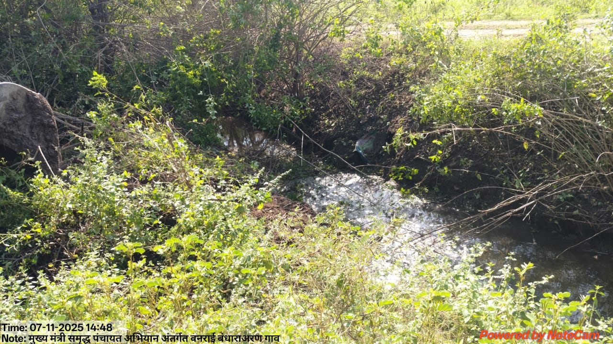
Vanrai Bandhara — water harvesting in progress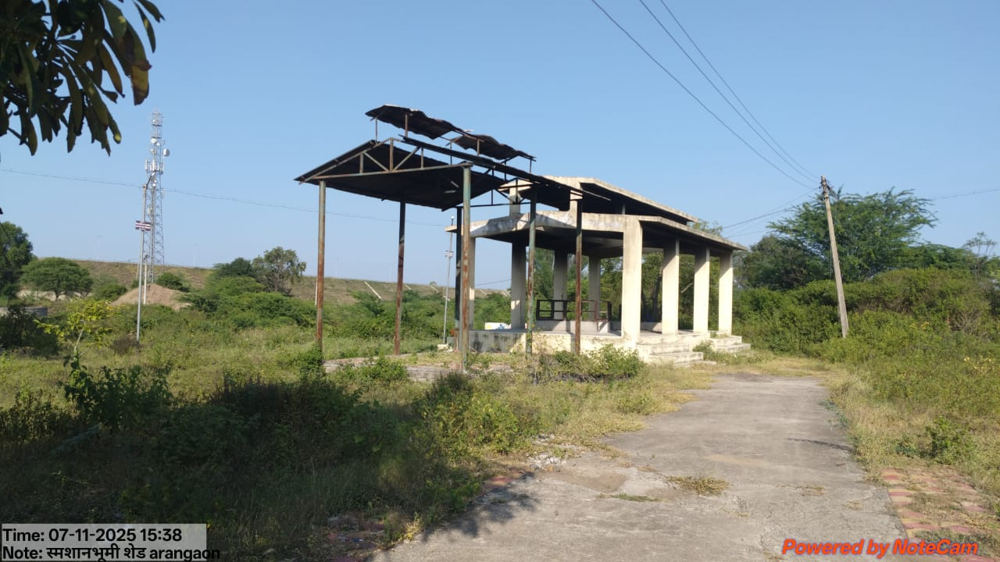
Smashan Bhumi shed, Arangaon — community facility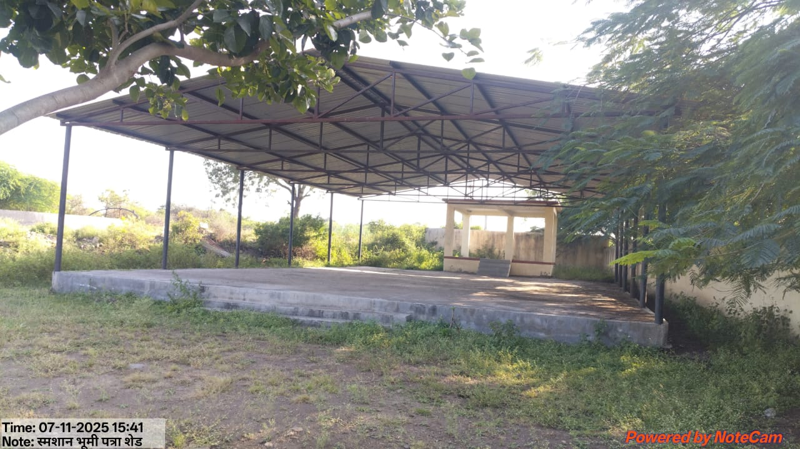
Smashan Bhumi covered shed (patra) — Arangaon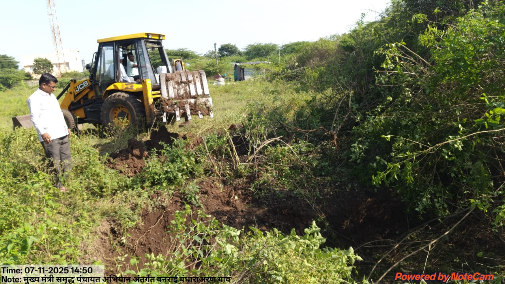
Vanrai Bandhara excavation work — Arangaon village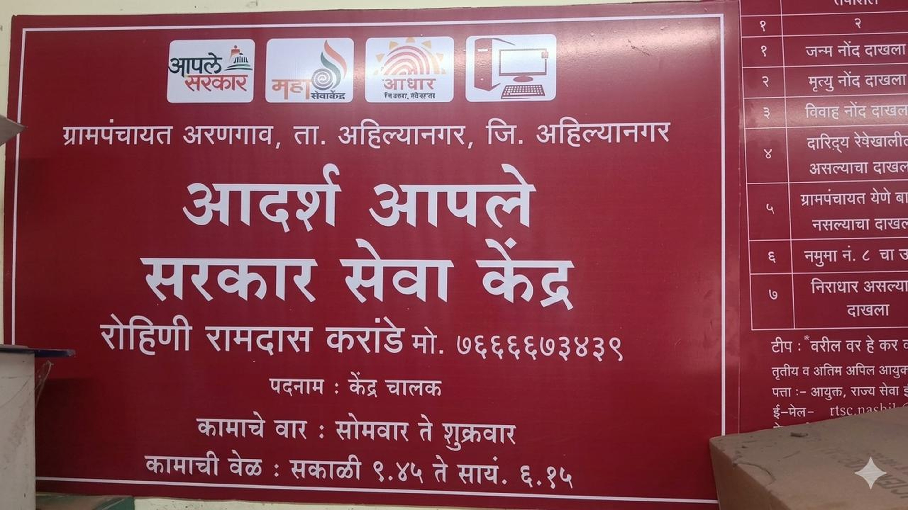
Adarsh Aaple Sarkar Seva Kendra — Grampanchayat Arangaon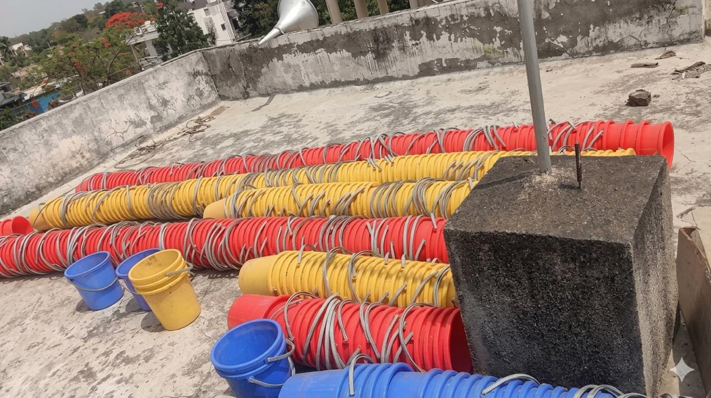
Water buckets distribution — village water supply initiative, Arangaon